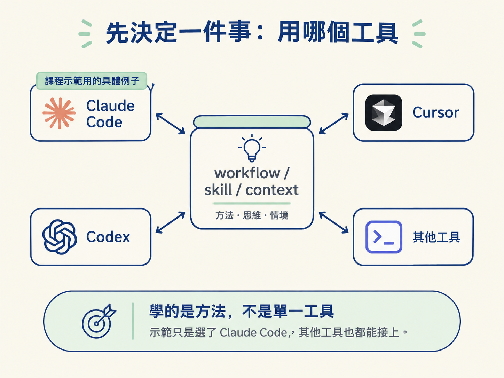
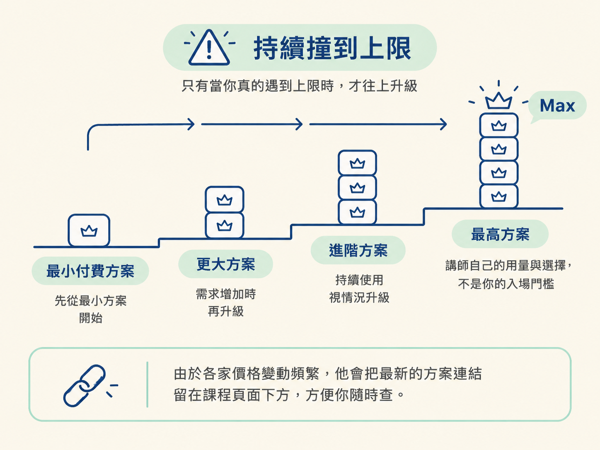

照著步驟把課程要用的 coding agent CLI（示範用 Claude Code）與 VS Code 擴充裝好，驗收標準只有一個：打開編輯器叫得出 agent。同時你要知道兩件事：為什麼課程選這個工具，以及付費方案該從哪一級開始買。
前面幾節都在講定位與心態，現在終於要動手了。講師開門見山就說，這是全課程唯一一節「無聊」的設定課，而且他預期你多半早就把環境準備好了，所以會講得很快。
動手之前只需要確認兩件事：你會寫程式、會用終端機與編輯器（前一節講的技術門檻），以及心理上接受這需要一筆付費方案的支出。其餘照著做就行。做完之後，你會得到一個能在編輯器裡直接叫出 agent 的環境，這是後面每一章實際操作的前提。
第一步是選定你要在哪個工具裡工作。課程全程在 Claude Code 裡示範，原因很務實：講師做過一次投票，絕大多數人想看的就是它。
但有一件事必須先講白：你在這門課學到的 workflow、skill，以及看待 context 的方式，全部都是 tool-agnostic（工具無關）的。這套東西可以原封不動搬到 Cursor、Codex，或任何你喜歡的工具上。
講師的教學策略是不在抽象層次空談、把翻譯工作丟給你，而是具體地在一個工具裡示範，沿路指出每一塊在別的工具有什麼對應。所以即使你不用 Claude Code，也不影響你學到這套方法，示範只是選了 Claude Code 這個具體的例子。

真正的設定只有兩步：
照順序做：
# 步驟一：安裝 CLI（實際指令以工具的官方文件為準）
# 例如 Claude Code 的 npm 安裝方式
npm install -g @anthropic-ai/claude-code
# 步驟二：在 VS Code 的擴充市集搜尋
# Claude Code
# 並安裝該擴充上面這段是依設定步驟的敘述整理出來的最小示意。實際的安裝指令與套件名稱會隨工具改版變動，動手的當下請以官方文件為準。你要驗證的重點只有一個：打開編輯器之後，你能叫出這個 agent。
在安裝任何東西之前，講師先把一個現實講清楚：真正的 agentic 工作要跑在付費方案上。免費層適合拿來東摸西摸，但不適合拿來真正 build 東西。他的建議是把這個支出當成一筆投資：你能從這些 agent 身上拿回的東西，遠超過付出的成本。
至於方案怎麼挑，他的建議很務實：
他個人使用的是 Max 方案，但那是他自己的用量與選擇，不是你的入場門檻。由於各家價格變動頻繁，他會把最新的方案連結留在課程頁面下方，方便你隨時查。

若你的編輯器是 Cursor 或 Codex，安裝的具體做法會不一樣：CLI 的安裝方式與對應的整合方式各有各的文件，照該工具的文件走。
但不變的是心智模型，照這個順序想：
這一節的目標不是背下某個指令，而是把「可以叫出 agent」這個狀態建立起來。
設定只有兩步：安裝 CLI，以及在 VS Code 上安裝 Claude Code 擴充。工具無關是這門課的保證：workflow、skill、context 思維都能搬去 Cursor、Codex。付費方案是實務前提：免費層只能玩玩，真正 build 要用付費方案，從最小方案起步、持續撞到上限再升級。做完的驗收標準很簡單：打開編輯器，你叫得出 agent。
環境好了，但光有環境還不足以讓這門課發揮效果。下一節會講怎麼「消費」這門課：五條學習守則，決定你能不能把這套 workflow 真正變成自己的。